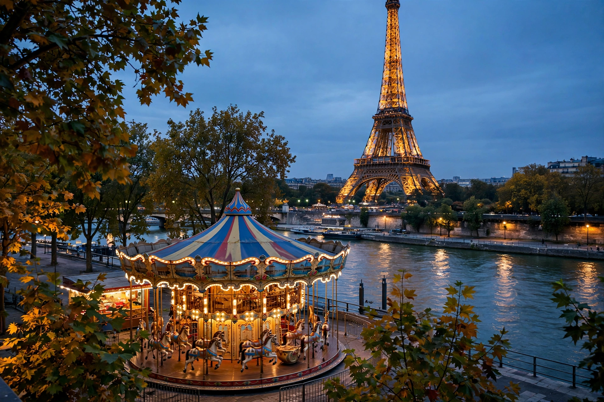

Paris

Paris is the capital and largest city of France. With an official estimated population of about 2.1 million residents in the city proper and more than 11 million in its metropolitan area, it is among the largest urban centres in Europe. Situated on a bend of the River Seine in north-central France, Paris is the country's centre of politics, economy, culture and transport.
Paris is world-famous for landmarks including the Eiffel Tower (completed 1889), Notre-Dame Cathedral, the Louvre — the world's most-visited museum, home to the Mona Lisa — the Champs-Élysées and the Sacré-Cœur. Known since the 19th century as the 'City of Light', Paris was a major centre of the Enlightenment, of art movements from Impressionism onward, and of fashion and gastronomy. Baron Haussmann's renovation in the 19th century gave the city its boulevards and uniform stone facades. Paris hosted the Olympic Games in 1900, 1924 and 2024.
History
Founded by the Celtic Parisii tribe on the Île de la Cité, Paris (Roman Lutetia) grew into a major medieval university city. It was the stage of the French Revolution from 1789, occupied by Nazi Germany from 1940 to 1944, and the centre of the May 1968 protests.